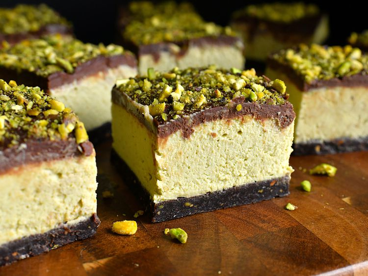

No-Bake Chocolate Pistachio Cheesecake Bars

Description
These no-bake chocolate pistachio cheesecake bars require no oven or stove-top time whatsoever, and the hardest part of making them is waiting for them to chill. Chocolate and pistachios are a match made in heaven—and they get even better when cheesecake is involved!
Ingredients
Crust
- 5 tablespoons unsalted butter
- 2 tablespoons firmly packed brown sugar
- 1 pinch salt
- 1 pinch ground cinnamon
- 1 pinch ground nutmeg
- 1/4 teaspoon almond extract
- 1 1/2 cups finely ground Oreo cookie crumbs (from about 19 Oreos)
- 1/2 cup finely ground roasted unsalted pistachios
Filing
- 16 ounces cream cheese
- 1 cup confectioners sugar, or to taste
- 1 tablespoon lemon juice
- 3/4 teaspoon vanilla extract
- 1/2 teaspoon almond extract, or to taste
- 1 pinch salt
- 1 heaping cup pistachio cream
- 1 tablespoon tahini, or to taste
- 2/3 cup cold heavy cream
Ganache
- 3/4 cup milk chocolate chips
- 3/4 cup heavy cream
- 2 teaspoons corn syrup
- 2 tablespoons finely chopped pistachios, for garnish
Steps
- Line a 9x9-inch square pan with enough parchment paper to have overhang on all sides.
- For crust, place butter, brown sugar, salt, cinnamon, and nutmeg into a microwave-safe bowl. Heat in 30 second intervals, stirring every 30 seconds, until mixture is bubbling and sugar is mostly dissolved, 2 to 2 1/2 minutes. Add in almond extract, Oreo crumbs, and ground pistachios and mix until thoroughly moistened. Pour crust mixture into the prepared pan. Press mixture firmly and evenly into the bottom and slightly up the sides of the pan. Chill crust in the freezer until firm, 20 to 30 minutes.
- For filling, beat cream cheese, confectioner’s sugar, and lemon juice together until smooth and combined, about 2 minutes. Add in vanilla, almond extract, and salt and beat until incorporated. Add in pistachio cream and tahini and mix until smooth. Add cold heavy cream, and beat until mixture has thickened, about 5 minutes.
- Remove crust from freezer. Pour filling mixture over chilled crust and smooth into an even layer. Tap pan on the counter a few times to remove any large air bubbles. Place pan back into the freezer to chill until filling feels mostly set, at least 3 hours.
- For ganache, place chocolate chips in a bowl. Put 3/4 cup cream and corn syrup in a microwave-safe glass measuring cup; heat in the microwave until cream just begins to bubble, about 2 1/2 minutes. Pour mixture over chocolate chips and allow it to sit for about 3 minutes. Gently stir until ganache is smooth and combined.
- Remove bars from freezer. Pour ganache over the chilled filling and spread into an even layer. Sprinkle 2 tablespoons chopped pistachios evenly over the top of the ganache. Place bars back into the freezer to allow the ganache to set, about 15 minutes (this ganache will not set up firmly, it stays a little softer).
- When ready to serve, remove bars from the freezer. Lift bars out of the pan using the parchment overhang and place onto a cutting board. Carefully peel parchment off the bars. Run a sharp knife under hot water for a few seconds, then wipe dry. Cut bars with hot knife, wiping off between each cut. Repeat heating the knife and drying as needed until bars are cut. Keep extra bars stored in the freezer, but allow to soften at room temp for about 20 to 30 minutes before serving.
Back to homepage with all recipes